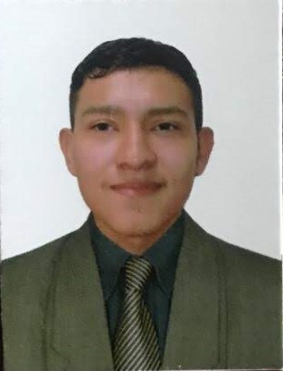

Manuel Alejandro Poveda Cordoba
Programador y Lider del grupo 2
Coordonador general del proyecto, encargado de ejecutar y mantener el código fuente de nuestro sitio web manejando lenguajes y herramientas de desarrollo.

Jennifer Viviana Barrios Escalante
Programadora y Copywriter
Encargada de realizar un trabajo social para informar, expresar y convencer a un público objetivo. También debe mantener la información generada durante el desarrollo web.Trabajo en colaboración con los gestores de contenido, asegurando la calidad de la información desplegada en nuestra web. nuestro sitio web

David Santiago Bernal Vergara
Programador y gestor de contenido
Encargado del diseño del sitio web, maneja la informacion que se incorpora, facilita imagenes e informacion de la empresa